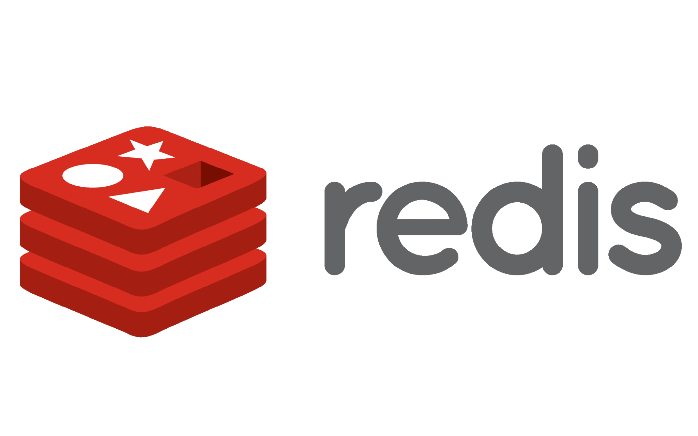

Системи за управление на бази данни
Изчерпателно ръководство за водещите световни технологии за бази данни
Изследване на различни типове бази данни
Релационни бази данни
Разгледайте традиционните бази данни, базирани на таблици, които използват SQL и връзки между таблиците.
Научете повечеNoSQL бази данни
Открийте съвременни нерелационни бази данни, предназначени за специфични модели на данни с гъвкави схеми.
Научете повечеОтносно Този Проект
Научете повече за създателя на този информационен сайт и за целта на проекта.
Научете повечеПрепоръчани системи за бази данни
MySQL
Най-популярната в света релационна база данни с отворен код.
MongoDB
Водеща система за базирана на документи NoSQL база данни.
Oracle
Система за управление на релационни бази данни от корпоративен клас.

Redis
Съхраняване на структури от данни в паметта, използвани като база данни, кеш и брокер на съобщения.
Готови ли сте да се потопите по-дълбоко?
Разгледайте подробна информация за всяка система за бази данни, включително характеристики, предимства и случаи на използване.
Започнете да проучвате